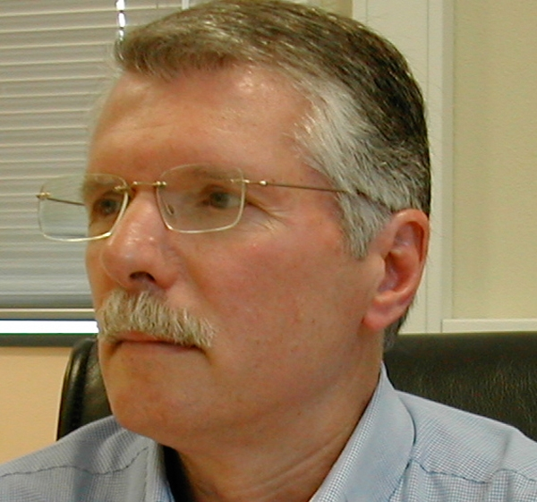
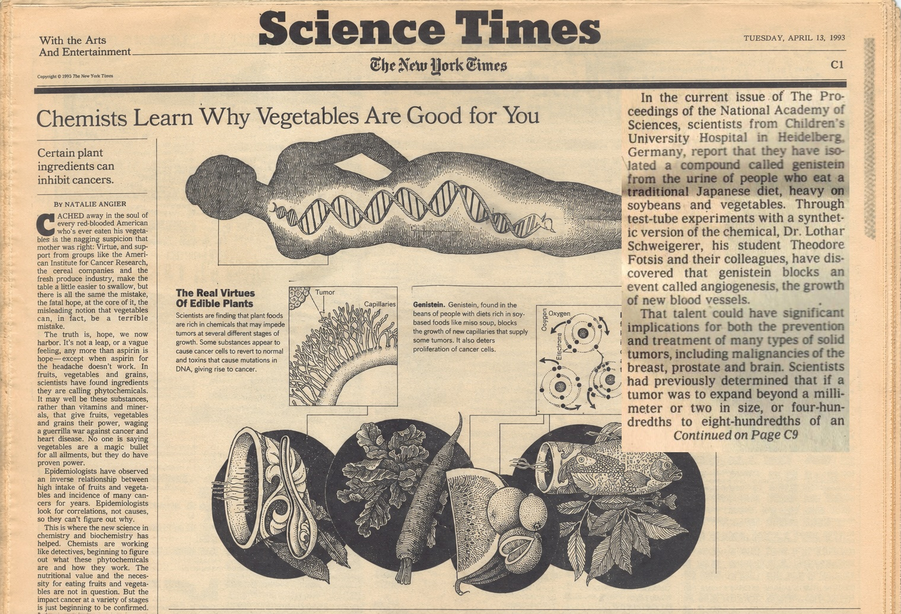

Nachdem mein Antrag auf Forschungsförderung von der Deutschen Krebshilfe bewilligt war, hatte ich nicht nur ein Problem gelöst, sondern gleich mehrere neue bekommen. So ist das in der Wissenschaft. Vorher hat man kein Geld und klagt darüber. Danach hat man Geld und muss liefern.
Ich hatte eine Postdoc-Stelle und eine Stelle für eine technische Assistentin. Gudrun Fleischmann war als technische Assistentin da. Jetzt brauchte ich noch den Postdoc. Also jemanden, der wissenschaftlich selbständig genug war, um Projekte voranzubringen, aber auch bereit, in einem kleinen Heidelberger Labor mitzumachen, das noch nicht gerade nach Weltruhm roch.
Der Bewerber, der schließlich kam, hieß Theodore Fotsis. Er war Grieche und Mediziner, hatte in Finnland und Irland gearbeitet und kam nicht allein nach Heidelberg. Seine Frau Carol Murphy, eine Irin, hatte eine Stelle am European Molecular Biology Laboratory, dem EMBL, bekommen. Also suchte Theo ebenfalls eine Stelle in Heidelberg. Da trafen sich seine Suche und meine Förderung auf recht glückliche Weise.

Theo war ein angenehmer Mensch. Ehrlich, geradeaus, freundlich. Kein Intrigant, kein Schleimer, kein akademischer Selbstdarsteller mit Dauerlächeln. Er hatte etwas Entspanntes, Südliches an sich. Sein Grundton war ungefähr: Don't worry. Alles wird gut. Das ist eine sympathische Haltung, solange wirklich alles gut wird. In der Wissenschaft ist das allerdings nicht immer der Fall. Manchmal wird etwas gut, manchmal nichts und manchmal garnichts.
Theo kam aus einem anderen Forschungsfeld. Er hatte zuvor im Labor von Hermann Adlercreutz in Helsinki an kleinmolekularen Substanzen gearbeitet, die aus Urin isoliert wurden. Von dort brachte Theo Substanzen mit, von denen man wusste, dass sie existierten, aber nicht unbedingt, was sie biologisch taten.
Mein Interesse galt damals weiterhin der Bildung neuer Blutgefäße, Angiogenese genannt. Tumoren brauchen Blutgefäße, wenn sie wachsen wollen. Ohne Versorgung mit Sauerstoff und Nährstoffen ist irgendwann Schluss mit Expansion. Also versuchen sie, Gefäße anzulocken. Die Vorstellung, Tumorwachstum über die Gefäßbildung zu beeinflussen, war damals ein heißes Feld.
Wir kultivierten Endothelzellkulturen, also die Zellen, welche die Blutgefäße auskleiden. Auf diese Zellen konnten wir Substanzen geben und beobachten, ob sie das Wachstum hemmten oder förderten. Theo brachte seine Fraktionen mit, wir gaben sie auf Endothelzellen, und dann schauten wir, was passierte.
In einer dieser Fraktionen fanden wir eine starke Hemmung des Endothelzellwachstums. Der Hauptinhalt war der Pflanzenbestandteil Genistein. Daraus ergab sich eine Geschichte, die uns gut gefiel: pflanzenreiche Ernährung, Aufnahme der Substanzen im Körper, dort Hemmung der Angiogenese und schließlich Ausscheidung über den Urin, wo sie nachweisbar waren. Und die Hypothese: pflanzenreiche Ernährung kann zur Hemmung der Angiogenese auf natürliche Weise beitragen und damit die Tumorangiogenese hemmen.
Diese Arbeit publizierten wir in PNAS, den Proceedings of the National Academy of Sciences der USA. Für eine kleine Heidelberger Arbeitsgruppe war das nicht schlecht. Es war einer dieser Momente, in denen man merkt, dass man mit begrenzten Mitteln durchaus ernsthafte Wissenschaft machen kann, wenn die Frage stimmt und die Daten halten.
Die Arbeit schlug hohe Wellen in der internationalen Presse. Die New York Times berichtete ausführlich über die Arbeit und die mögliche klinische Bedeutung.

Noch spannender wurde es mit einer anderen Substanz: 2-Methoxyöstradiol. Auch sie hemmte stark das Wachstum von Endothelzellen. Daraus entstand später mein erstes Nature-Paper als Letztautor. Das war für mich eine wichtige Zäsur. Erstautor war ich vorher schon gewesen. In Gießen. In San Francisco. Aber Letztautor zu sein bedeutete etwas anderes. Es sagte: Diese Arbeit kommt aus meiner eigenen Gruppe (siehe Bild ganz oben).
Theo hielt die Dinge auf seine Art zusammen. Manchmal allerdings anders, als ich mir das vorgestellt hatte. Einmal fragte ich ihn mittags, wo Gudrun sei. Er sagte, er habe sie nach Hause geschickt. Ich fragte, warum. Er sagte: Er habe keine Arbeit mehr für sie gehabt.
Das war Theo. Und ich stand da mit meinem deutschen Antragswesen im Kopf, mit Anschlussfinanzierung, Publikationsdruck, Personalstellen, Reagenzienkosten und dem Gefühl, dass eine technische Assistentin nicht um die Mittagszeit nach Hause geschickt wird, weil einem gerade nichts einfällt. Ich sagte sinngemäß: Dann mach ihr doch Arbeit.
Das war nicht böse gemeint. Es zeigte nur, dass Theo und ich verschieden tickten. Ich war getrieben von der Vorstellung, dass man eine bewilligte Stelle rechtfertigen musste. Publikationen waren nicht Dekoration, sondern Voraussetzung für die nächste Finanzierung. Theo lebte mehr. Nachmittags ging er gelegentlich reiten. Ich fragte mich manchmal, wer eigentlich die bessere Lebensqualität hatte: mein Postdoc oder ich.
Wahrscheinlich Theo.
Aber gerade diese Verschiedenheit machte die Zusammenarbeit auch interessant. Theo war kein Mensch, den man jeden Morgen mit der Stechuhr hätte begrüßen sollen. Er brauchte Freiheit. Er hatte eigene Ideen, eigene Erfahrungen und eine Gelassenheit, die mir manchmal auf die Nerven ging und manchmal guttat. Wissenschaft lebt nicht nur von Disziplin. Sie lebt auch von Menschen, die Dinge anders sehen.
Theo entwickelte sich später sehr gut. Er wurde Professor für Molekularbiologie an der Universität Ioannina in Nordgriechenland. Carol Murphy ging mit ihm dorthin. Wenn ich an ihn denke, sehe ich keinen strahlenden Karrieristen, sondern einen freundlichen, ehrlichen, etwas entspannteren Menschen, der in meinem kleinen Heidelberger Labor eine wichtige Rolle spielte.
Die Arbeiten mit Genistein und 2-Methoxyöstradiol gehören zu den wissenschaftlich erfolgreichsten Ergebnissen meiner Heidelberger Zeit. Aber ohne Theo wären sie so nicht entstanden. Er brachte den ungewöhnlichen Hintergrund mit. Ich brachte die Angiogenese-Frage und die klinisch-onkologische Perspektive ein. Zusammen wurde daraus etwas, das größer war als unsere kleine Arbeitsgruppe.
So funktioniert Wissenschaft gelegentlich. Nicht durch große Strategiepapiere, sondern weil ein Grieche nach Heidelberg kommt, weil seine irische Frau am EMBL arbeitet, weil aus Finnland Urinfraktionen mitgebracht werden, weil Endothelzellen wachsen oder eben nicht wachsen und weil irgendjemand rechtzeitig merkt, dass daraus eine Geschichte werden könnte.
Nur: Manchmal muss man nur aufpassen, dass der Postdoc die technische Assistentin nicht schon mittags nach Hause schickt.